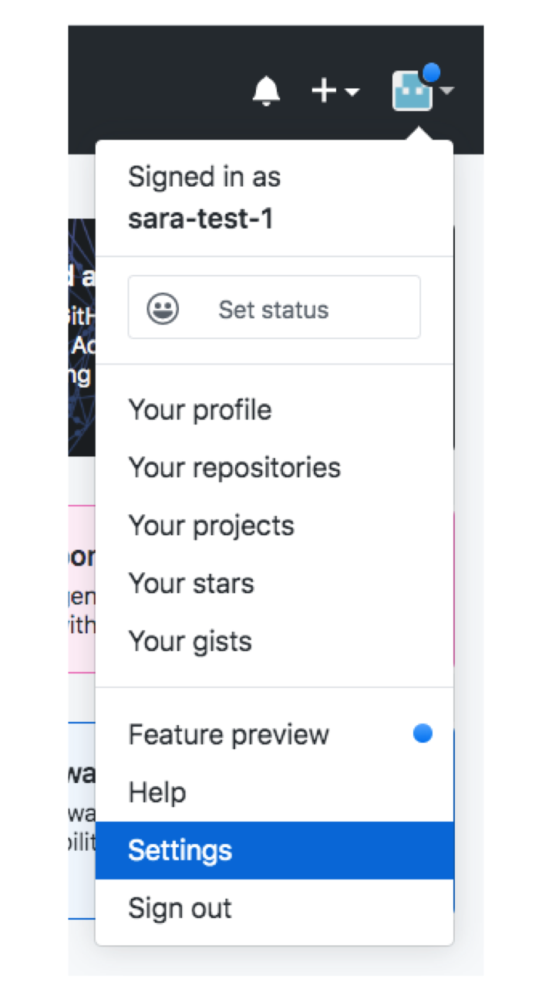
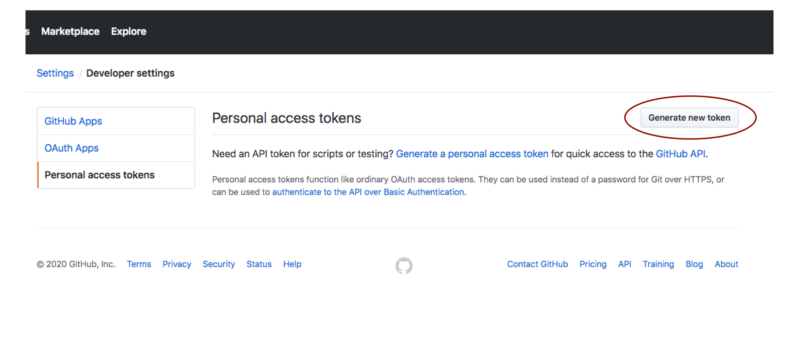
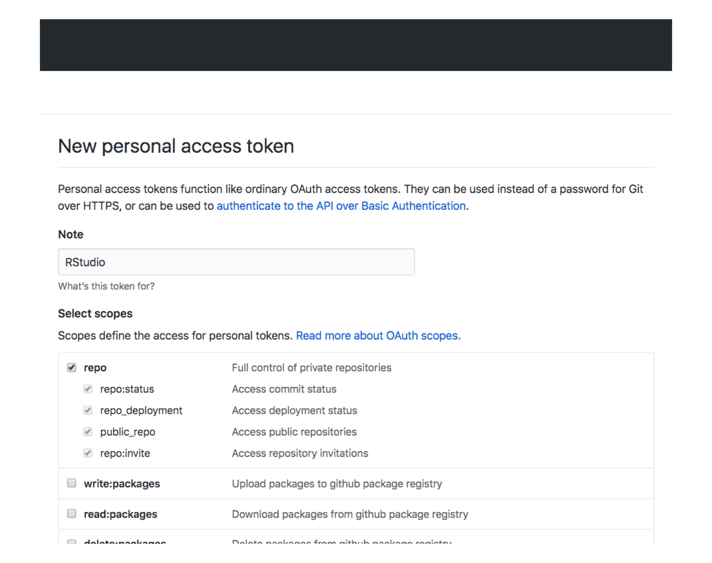
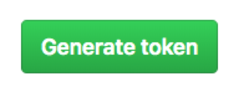
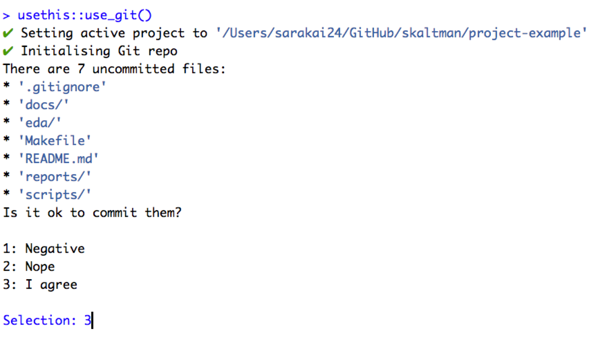
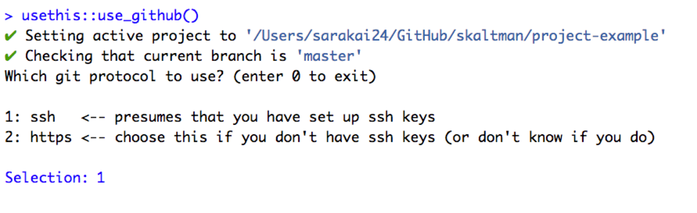
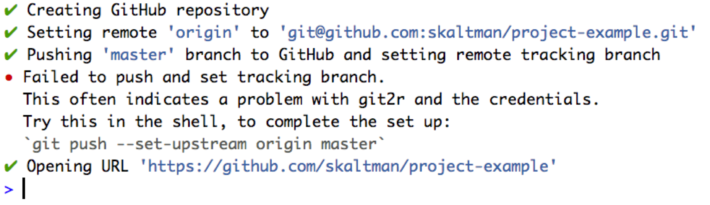

6 Project setup
6.1 Create a project
We recommend creating one directory for each project. All your data and files for your project will live in this one directory.
Ideally, you’ll organize your files in this directory in a principled way. We’ve created a project template with our suggested folder organization. If you haven’t already, install the dcl package:
Now, you can run
to create a directory at your supplied path with the following files and directories:
- data: cleaned data
- data-raw: raw data
- docs: data documentation and notes
- eda: exploratory data analysis on your cleaned data
- scripts: data manipulation scripts
- reports: findings to present to others
- Makefile
- .gitignore
- README.md
We’ll discuss how to use these directories and files in the next chapter.
By default, dcl::create_data_project() creates an RStudio project for the directory. If you don’t want to create an RStudio project, set the project argument to FALSE:
Note that it’s generally a bad idea to nest RStudio projects. If you find yourself wanting to use our folder organization inside a different RStudio project, you’ll probably want project = FALSE.
6.2 Setup GitHub
We recommend using GitHub for all your data work. Generally, you’ll want one repository per project.
Here, we’ll explain how to setup Git and GitHub for your new project. The following steps will only work if you set project = TRUE in the previous section (they require a .Rproj file). However, if you didn’t want an RStudio project for your project, you likely also don’t want a GitHub repository.
6.2.1 GitHub token
You will need a GitHub personal access token in order to setup Git and GitHub from RStudio. Open GitHub in your browser. Then:
- Click on your profile picture in the upper righthand corner, then click on Settings.

- Then, go to Developer settings > Personal access tokens > Tokens (classic).
- Click Generate new token.

- Name your token something like RStudio or R. Under Scopes, select repo (You can select other scopes if you anticipate using the GitHub API in more scenarios.)

- Scroll down to the bottom, then click Generate token.

- Copy the resulting token to your clipboard and return to RStudio.
- From the RStudio console, open your .Renviron file with
- Add the following line to your .Renviron file, replacing
YOUR_TOKENwith the token you copied earlier.
- Save the file.
- Restart R (Cmd/Ctrl + Shift + 0).
6.2.2 use_git()
Now, we can create a Git repository for your project.
If you haven’t already, open your project in RStudio. Then, in the console, run
use_git() will set up a Git repository for your project, then ask you if you want to make an initial commit:

Enter the number that corresponds to the Yes option. Here, that’s 3, but it might be different for you.
Next, you’ll be prompted to restart RStudio. Select the Yes option.
6.2.3 use_github()
use_git() initializes a Git repository, but you’ll still need to connect that repository to GitHub. To do so, run
Note that use_github() has multiple optional arguments that allow you to, for example, create the repository under an organization or make the repository private.
You’ll be prompted for a git protocol. You’ll probably want ssh.

Next, you’ll be prompted to verify the repository name and description. Say Yes unless you’re unhappy with them (you can always change them later).
You might get the following error:

- If so, copy the recommended command.
Then, open Terminal, navigate to your project directory, paste in your copied command, and press enter. This command sets the default location to which
git pushwill push.Earlier,
use_github()opened your GitHub repository in the browser. To see the result of your push, refresh the page. Your files should appear.
Your setup is complete! In the next chapter, we’ll go into more detail about how to use the folders and makefile created by dcl::create_data_project().